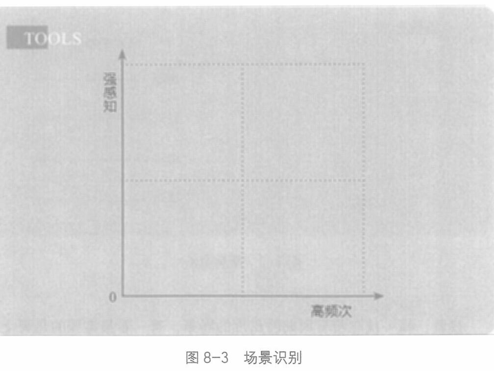

就是选择与用户产生连接机会的频率。
再拿坚果这个品类举例：每日坚果肯定比年货坚果好。这几年大热的消费品，无不具有清晰的场景。
我们前面说过，小产品靠口碑，大产品靠国民习惯。周期性出现的场景就是习惯产生的地方。
接着，我们可以用图8-3对穷举出来的所有场景做一个识别。

所有场景中，哪个感知更强? 比如，军训完喝冰可乐，感知就高于平时； 而吃火锅配冰啤酒，感知也高于一般情况。
把所有场景写在图8-3的不同位置，我们会看到，同一个产品，在不同的场景里，用户的感受并不相同。让用户感知更强烈的场景，应该是更值得重视的。所以，我们应该在高频出现，且能形成强感知
240